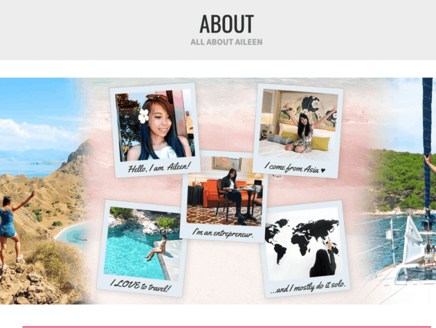

Explore the world with me as I share my treavel experiences, tips and recommendations.

Top Travel Destinations
Destination
Best time to visit
Language
Tokyo
March - June
Japanese
Australia
January - June
English
Paris
October - February
French
Travel Tips
Pack Light: Use a small backpack or suitcase (around 35-45 liters) to avoid overpacking. This encourages you to bring only essentials and makes traveling easier.
Use Packing Cubes: These help organize your luggage and maximize space. They also make it easier to repack if your bag is searched at the airport.
Carry a Towel: A lightweight, quick-drying towel is useful for various situations, from beach outings to drying off after a shower.
Include a Change of Clothes in Your Carry-On: In case your checked bag gets lost, having a full outfit in your carry-on ensures you’re not left without essentials.
Travel videos
Check out our latest travel videos on YouTube:
"Traveling – it leaves you speechless, then turns you into a storyteller." – Ibn Battuta